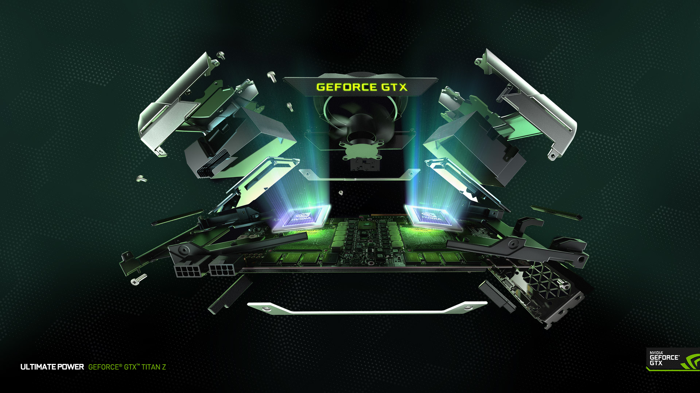

Company history
Nvidia Corporation (/ɛnˈvɪdiə/ en-VID-ee-ə),[2] more commonly referred to as Nvidia (stylized as NVIDIA), is an American technology company incorporated in Delaware and based in Santa Clara, California.[3] It designs graphics processing units (GPUs) for the gaming and professional markets, as well as system on a chip units (SoCs) for the mobile computing and automotive market. Its primary GPU product line, labeled "GeForce", is in direct competition with Advanced Micro Devices' (AMD) "Radeon" products. Nvidia expanded its presence in the gaming industry with its handheld Shield Portable, Shield Tablet and Shield Android TV. Since 2014,[citation needed] Nvidia has shifted to become a platform company focused on four markets – gaming, professional visualization, data centers and auto. Nvidia is also now focused on artificial intelligence.[4] In addition to GPU manufacturing, Nvidia provides parallel processing capabilities to researchers and scientists that allow them to efficiently run high-performance applications. They are deployed in supercomputing sites around the world.[5][6] More recently, it has moved into the mobile computing market, where it produces Tegra mobile processors for smartphones and tablets as well as vehicle navigation and entertainment systems.[7][8][9] In addition to AMD, its competitors include Intel, Qualcomm and Arm (e.g., because of Denver, while Nvidia also licenses Arm's designs).
Major releases and acquisitions
The release of the RIVA TNT in 1998 solidified Nvidia's reputation for developing capable graphics adapters. In late 1999, Nvidia released the GeForce 256 (NV10), most notably introducing on-board transformation and lighting to consumer-level 3D hardware. Running at 120 MHz and featuring four pixel pipelines, it implemented advanced video acceleration, motion compensation and hardware sub-picture alpha blending. The GeForce outperformed existing products by a wide margin. Due to the success of its products, Nvidia won the contract to develop the graphics hardware for Microsoft's Xbox game console, which earned Nvidia a $200 million advance. However, the project took many of its best engineers away from other projects. In the short term this did not matter, and the GeForce2 GTS shipped in the summer of 2000. In December 2000, Nvidia reached an agreement to acquire the intellectual assets of its one-time rival 3dfx, a pioneer in consumer 3D graphics technology leading the field from mid 1990s until 2000. The acquisition process was finalized in April 2002. In July 2002, Nvidia acquired Exluna for an undisclosed sum. Exluna made software rendering tools and the personnel were merged into the Cg project. In August 2003, Nvidia acquired MediaQ for approximately US$70 million. On April 22, 2004, Nvidia acquired iReady, also a provider of high performance TCP/IP and iSCSI offload solutions. In December 2004, it was announced that Nvidia would assist Sony with the design of the graphics processor (RSX) in the PlayStation 3 game console. On December 14, 2005, Nvidia acquired ULI Electronics, which at the time supplied third-party southbridge parts for chipsets to ATI, Nvidia's competitor. In March 2006, Nvidia acquired Hybrid Graphics.In December 2006, Nvidia, along with its main rival in the graphics industry AMD (which had acquired ATI), received subpoenas from the U.S. Department of Justice regarding possible antitrust violations in the graphics card industry. Forbes named Nvidia its Company of the Year for 2007, citing the accomplishments it made during the said period as well as during the previous five years. On January 5, 2007, Nvidia announced that it had completed the acquisition of PortalPlayer, Inc. In February 2008, Nvidia acquired Ageia, developer of the PhysX physics engine and physics processing unit. Nvidia announced that it planned to integrate the PhysX technology into its future GPU products. In July 2008, Nvidia took a write-down of approximately $200 million on its first-quarter revenue, after reporting that certain mobile chipsets and GPUs produced by the company had "abnormal failure rates" due to manufacturing defects. Nvidia, however, did not reveal the affected products.

In September 2008, Nvidia became the subject of a class action lawsuit over the defects, claiming that the faulty GPUs had been incorporated into certain laptop models manufactured by Apple Inc., Dell, and HP. In September 2010, Nvidia reached a settlement, in which it would reimburse owners of the affected laptops for repairs or, in some cases, replacement. On January 10, 2011, Nvidia signed a six-year, $1.5 billion cross-licensing agreement with Intel, ending all litigation between the two companies. In November 2011, after initially unveiling it at Mobile World Congress, Nvidia released its Tegra 3 ARM system-on-chip for mobile devices. Nvidia claimed that the chip featured the first-ever quad-core mobile CPU. In May 2011, it was announced that Nvidia had agreed to acquire Icera, a baseband chip making company in the UK, for $367 million. In January 2013, Nvidia unveiled the Tegra 4, as well as the Nvidia Shield, an Android-based handheld game console powered by the new system-on-chip. On July 29, 2013, Nvidia announced that they acquired PGI from STMicroelectronics.[34][citation needed] On May 6, 2016, Nvidia unveiled the first GeForce 10 series GPUs, the GTX 1080 and 1070, based on the company's new Pascal microarchitecture. Nvidia claimed that both models outperformed its Maxwell-based Titan X model; the models incorporate GDDR5X and GDDR5 memory respectively, and use a 16 nm manufacturing process. The architecture also supports a new hardware feature known as simultaneous multi-projection (SMP), which is designed to improve the quality of multi-monitor and virtual realityrendering. Laptops that include these GPUs and are sufficiently thin – as of late 2017, under 0.8 inches (20 mm) – have been designated as meeting Nvidia's "Max-Q" design standard. In 2016, Nvidia leverages NVIDIA-Powered Infotainment in Luxgen.In July 2016, Nvidia agreed to a settlement for a false advertising lawsuit regarding its GTX 970 model, as the models were unable to use all of their advertised 4 GB of RAM due to limitations brought by the design of its hardware. In May 2017, Nvidia announced a partnership with Toyota Motor Corp. Toyota will use Nvidia's Drive PX-series artificial intelligence platform for its autonomous vehicles. In July 2017, Nvidia and Chinese search giant Baidu, Inc. announced a far-reaching AI partnership that includes cloud computing, autonomous driving, consumer devices, and Baidu's open-source AI framework PaddlePaddle. Baidu unveiled that Nvidia 's Drive PX 2 AI will be the foundation of its autonomous-vehicle platform. Nvidia officially released the NVIDIA TITAN V on December 7, 2017. Nvidia officially released the Nvidia Quadro GV100 on March 27, 2018. Nvidia officially released RTX 2080GPUs September 27, 2018. In 2018, Google announced that Nvidia's Tesla P4 graphic cards would be integrated into Google Cloud service's artificial intelligence. On 11 March 2019, Nvidia announced a deal to buy Mellanox Technologies for $6.9 billion to substantially expand its footprint in the high-performance computing market.